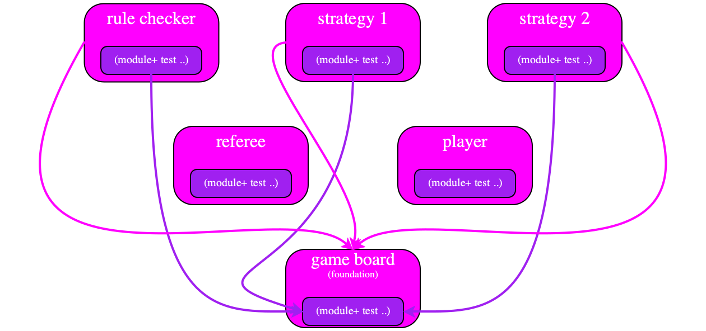

The Laffer Curve of Types
Apr 21 2019
Changed in version 1.0: Sat Apr 13 19:06:32 EDT 2019, initial release
Draft
Most of my research colleagues think of types as a language of theorems about the expressions of a program language and the type system as a proof system that proves type-theorems about expressions in a particular program. These people are also trained as proto-logicians, and thus they tend to ask about soundness when they are confronted with a new typed programming language.
I started working on migratory typing in 1998 (after working on soft typing for the previous eight or nine years),, and this work has changed my mind. I have come to consider type system design as an exercise in engineering, specifically engineering the interface between programming languages and human beings. This change in perspective affects which questions I ask about a type system. While I do not deny the importance of soundness, I have also come to think of it as only one of several equally important questions. My now-favorite question concerns the usefulness of the type system.
In my search for assessing the usefulness of type systems, I have come across the Laffer curve and its origin story. All of us programming language researchers know the idea behind the Laffer curve from engineering and mathematics courses. Concisely, engineering is an optimization process, that is, the maximization of some function subject to constraints. The Laffer curve spells out this insight for the vague discipline of economics. Since type-system design is equally vague at this point, I think we can learn a lot form this analogy.
Note I have explained the ideas in this “thought” to a small number of visitors over the years. Many of these academics dismiss the Laffer curve simply because it is associated with economic policies favored by conservatives, and because they are knee-jerk liberals. But just because “they” thought of it does not mean it may not come with a kernel of truth; just as much as liberal ideas about taxation may also say something acceptable.
The Original Laffer Curve Story
President Kennedy also proposed a tax rate decrease to stimulate the economy and increase the tax income of the federal government but without public reference to this curve.



Liberals often wish to raise tax rates in order to “punish” high-income earners, not to maximize government income. In this case, the Laffer curve would say that the government will have less money than optimally possible for transfer payments.
Simplistically the idea goes as follows. If a government reduces the tax rate to 0%, its tax income will be $0. Along similar lines, if the government imposes a 100% tax rate, people will refuse to work, won’t earn any income, and won’t pay taxes. This suggests the left-most graph in figure 1 with the two red dots on the x axis recording these first two observations about the function of income over rates. The next graph records the evidence that a tax rates in the middle between these two extremes actually produces a positive income for the government. Laffer seems to have drawn a simple-minded upside-down parabola through these points and suggested that raising tax rates beyond a certain point decreases the tax income of the government.
The right-most graph represents the thoughts of a mathematician who may or may not have any insights into taxation. First, the red dot on the right should not be on the x axis because people will work even if the government imposes a 100% tax rate. In return for giving up their entire income, they might receive sufficiently large hand-outs to survive. Or, their work might not be motivated by income; we all know such people. Second, there is no reason to believe that there is a single maximum; the curve might have several local maxima.
Notee What the last graph does not bring across is that the income function might not even be continuous with respect to tax rates. But this thought isn’t about the Laffer curve per se, so let’s move on.
Applying the Laffer Curve to Types and Type Systems
Now let’s replace “tax” with “type system,” “rate” with “expressiveness,” and “income” with “effectiveness.” While the meaning of expressiveness is tentatively clear for a type system, effectiveness comes with several different aspects. At a minimum, effectiveness should cover the prevention of run-time exceptions, but it should also measure the ease to get programs to run and run fast enough.
With these pretty vague ideas in mind, here is what the first Laffer curve of types looks like this:

The left-most point represents dynamic typing, which tags all values and uses these tags to check at run time whether a primitive operation may operate on some given arguments. In this world, there is only one expressible ”theorem” and all expressions satisfy it. Of course, such a simplistic type system does not prevent any run-time exceptions, so we should not consider it an effective type system. By contrast, there is an “extremist” type system that is guaranteed to prevent all run-time exceptions, and it is represented by the red dot on the right. It simply doesn’t bless any programs as type correct, meaning no programs are ever be allowed to run. Hence it is appropriate to assign this type system a score of 0 effectiveness, too.
Empirical evidence suggests that there are effective type systems. Let’s record this observation as red dots between the two extreme one:

For example, many programmers consider Java’s type system an improvement over C++’s. Similarly, type system experts think of Haskell’s type system as yet more effective than Java’s. But also note that far fewer programmers master Haskell’s type system than Java’s, so it isn’t just pluses and no minuses.
In short, we may wish to imagine the graph of the effectiveness function of types as follows:
It ignores the stupid type system that prevents all programs from running. Thus, its right-most red dot is placed a bit above the x axis. Think of a refinement or a dependent type system that is effective in preventing almost all run-time exceptions. But, because such a type system also imposes a much higher burden on the developer than Haskell’s or even Java’s, the pay-off is much lower than for those and the dot is below theirs.
The Laffer Curve of Migratory Typing
While it is actually difficult to appreciate the Laffer curve of types in the world of statically typed programming languages, it is much more obvious in the context of migratory typing. Unlike the design of static type system, the design of a migratory typing system does not start from a blank state. Instead the designers must study how programmers have used the dynamically typed language to which they are adding types. These programmers don’t just create code in a willy-nilly fashion; they think about it, and any observant researcher can recognize type-like reasoning in these programs. Also see Sam Tobin-Hochstadt’s explanation.
Expressiveness If we accept that developers working with dynamically typed languages use type-like reasoning, the purpose of adding a migratory type system is to turn (possibly un)documented type annotations into explicit ones and to check them. Here is a simple example from the Typed Racket world:
|
|
On the left we see how a conscientious Racket programmer writes the factorial function, with an unchecked but documented type signature, a basic comment, and an example formulated as a unit test. The right side shows how little has to change to turn this module into a fully typed and type-checked one.
This sample migration demonstrates two important points. The first one to note is that the type of this factorial function is not just Integer but Natural. The second one is that the function definition did not have to change for the type checker to bless the module. This simplicity does not come for free, however. The designers of Typed Racket intentionally provide Natural and a whole set-based hierarchy of numeric types. Also, their type system checks if expressions so as to confirm the induction scheme for Natural and similar set-based type definitions.
A different team of type-system designers might not have bothered with support for Natural. They might have expected programmers to switch to Integer. Similarly, such a team might not have added a modicum of dependent typing to avoid the need for Java-like casts in the branches of an if expression that discerns the different parts of a union of types.
We should wish to understand how such design choices concerning expressiveness affect programmers. The question is how we would go about researching the answer.
Granularity So let’s say we ran a team that owned a large code base written in some dynamically typed language, and we did wish to migrate this code to a typed sister language.
If the code were in Typed Racket, our developers would have to add type annotations to entire modules at once. For a small module, such as the factorial one above, adding a type annotation is not an onerous task. But some Racket modules are thousands of lines long. (Yes we did violate good coding practices in the past, for good reasons at the time and for reasons that illustrate why we are programming language researchers.) Migrating such a large module all at once into the typed world all at once is clearly a heavy burden. I coined the phrase macro migratory typing for this approach.
The designers of Reticulated Python, Siek and Vitousek, made
a rather different choice, and I refer to this as the micro
choice. Reticulated allows developers to annotate individual function and method
parameters, their return types, individual fields in classes, or individual
variables. Just because one such feature is annotated with a type does not mean
that others have to be annotated. This micro approach clearly requires much
less work from the developer than a “macro” based one, meaning developers are
probably more likely to take to it. For example, the developer of a rather
complex algorithm for an otherwise mundane piece of code may just wish to
annotate this algorithm withtypes to express some basic design ideas—
Yet another approach, dubbed manifest here and implemented as StrongScript for example, fits neither the (implemented) micro or macro approach. From an implementation perspective, the manifest generalizes the idea of run-time tags to run-time type-tags so that the run-time system can check whether methods are called properly, not just language primitives. The price for the StrongScript developer is that migrating a simple method becomes impossible if a derived class overrides this method. All overriding methods must also be annotated with types at the same time, and further extensions must use types, too. By contrast, other features of the class do not need to be typed.
Granularity and type Dynamic The presence or absence of type
Dynamic is a second factor concerning granularity. Some migratory type systems
take the uni-type system idea totally seriously. In this context, every missing
type annotation is defaulted to Dynamic, and to make this viable, the
compiler inserts run-time casts from Dynamic to appropriate types for
primitive operations automatically—
The choice of adding type Dynamic to a migratory type system is orthogonal to the whether the designers opt for the macro, micro, or manifest approach. But, obviously including Dynamic in the type language affects and making its use convenient determines how much work type migration imposes on the developer.
Again, we should ask how these design choices concerning granularity affect the effectiveness of a migratory type system. On one hand, there are plain technical concerns and questions; on the other hand, I am also alluding to human factors here.
Prevention One purpose of types is to prevent certain classes of mistakes. There’s little need to elaborate on this idea for static typing; there is enough literature out there. But let’s at least agree that the prevention of mistakes implies the prevent of run-time exceptions as raised by a dynamically typed language.
In the context of migratory typing, the effectiveness of error prevention
clearly depends on the all of the above factors. The expressible
types-as-theorems determine which run-time exceptions are prevented,
e.g. (! -1). The size of statically checked region of code helps
developers narrow down from where exceptions may originate. The presence of
Dynamic makes it easy to add types and get the exact same run-time
exceptions of dynamically typed languages—
And then there are migratory type systems that are unsound, such as TypeScript. While these typed languages may prevent some run-time exceptions, they open the door for subtle, no insidious mistakes concerning the interaction of typed and untyped code. Worse, there are type-sound languages with migratory typing that don’t protect the untyped code from mistakes in type annotations. I conjecture that designers came up with these compromised solutions in the name of performance, because they guess that proper protection is expensive and in the meantime our research confirmed that sound and complete migratory typing might be brutally expansive.
Performance If the addition of types causes a program to become so slow that users can no longer use it, migratory typing fails. I knew we needed run-time checks. Therefore I wanted to convert modules so that execution would spend a lot of time in code generated from typed fragments and untyped fragments with rarely executed run-time checks in the middle. And even with such foresight, I failed to get a Typed Racket with proper performance.
So, over the last couple of years performance has emerged as a major dimension of effectiveness in the world of migratory typing. We need research to make migratory effective in this direction.
The Benefits of Adding Types All of us in this research area take it for granted that migrating dynamically typed code to a typed sister language is a “good thing.” We have abstract arguments. We show concrete examples of how the addition of types revealed hidden bugs (that nobody ever bothered). We allude to the benefits of type annotations for interactions with the IDE. We believe that type annotations help with maintenance tasks down the line.
I have seen some papers that measure the pros and cons of similar programs written in distinct statically and dynamically typed programming languages. The context of migratory typing supplies a much better test bed than a pair of unrelated programming languages. It also isn’t clear to me whether the research methodology is properly developed, and an experiment in the setting of migratory typing would help develop this method further. Key is, research on migratory typing has made these questions truly relevant for the working developer, and it enables novel ways of studying the relationship between the various aspects of expressiveness and effectiveness. The syntax of statically and dynamically typed program phrases barely differ. It is thus easy to write programs in either one of these dialects, and a study does not have to account for differences in programming language. In most cases, these dynamically typed languages also have a (reasonably) large developer community that has created many code repositories. A researcher can study these repos to understand the programming idioms of the language and the needs of code migration.
So, my final question is how we develop real evidence for our claims about the benefits of migratory typing.
Why are We Avoiding These Questions
The “we” here is the community of programming language researchers, including myself. My students and I have tackled some of these questions, with results that are somewhat satisfying and simultaneously just raising more questions than they answer.
Of the above questions, the one concerning performance is the easiest to
address—
Of the remaining questions, none come with easily quantifiable answers. Indeed, we don’t even have research methods for many of them. Which is probably why we don’t address them. And this is a real problem.
Many PhD applications in the programming language area state that the applicants
wish to improve the code that working developers produce and their working
conditions. Sadly, these very same essays then go on to restate the currently
fashionable trendsThis is not to deny that some of these fashions
will also change the future of software development.} in programming language
conferences—